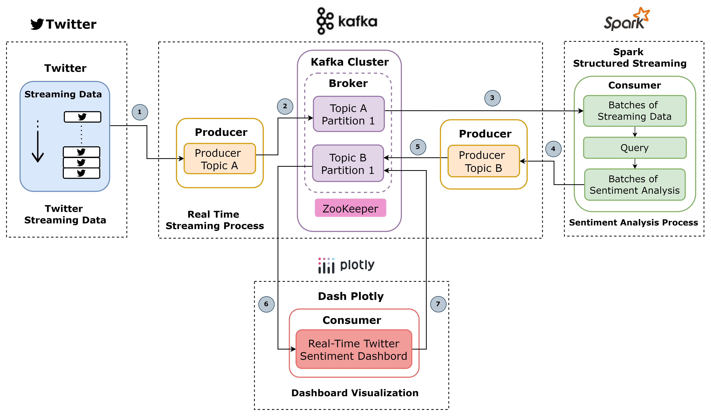

Sistem Analisis Sentimen Real-Time
Deskripsi
Sistem "Analisis Sentimen Destinasi Super Prioritas Berbasis Stream Processing Menggunakan Big Data Platform" ini menyediakan gambaran menyeluruh tentang sentimen pengguna Twitter secara real-time dengan menggunakan big data platforms mengenai Destinasi Super Prioritas di Indonesia (seperti Danau Toba, Borobudur, Mandalika, Labuan Bajo, dan Likupang) pada tahun 2022.
Platform big data yang digunakan yaitu Apache Kafka dan Apache Spark. Tahapan proses yang dilakukan meliputi pengumpulan data dari Twitter, streaming menggunakan Kafka, analisis sentimen, dan proses analisis lainnya menggunakan Spark. Hasilnya berhasil dipresentasikan melalui dashboard menggunakan Dash by Plotly.
Tujuan
- Memahami Sentimen Publik: Memberikan wawasan berharga tentang opini publik pengguna Twitter terhadap Destinasi Super Prioritas di Indonesia.
- Mendukung Pengambilan Keputusan: Membantu pemangku kepentingan membuat keputusan yang tepat untuk meningkatkan strategi pariwisata dan pengalaman pengunjung.
- Visualisasi Real-Time: Menawarkan visualisasi data real-time dan metrik sentimen mendalam untuk melacak tren terbaru dan memahami opini publik pengguna Twitter saat ini.
Desain Arsitektur Sistem
Desain arsitektur sistem melibatkan alur data dari Twitter yang diperoleh secara terus-menerus melalui crawling. Data tweet dikirim ke Apache Kafka dengan Topik A sebagai tempat penyimpanan awal. Kafka Broker menyimpan data tersebut, sementara Spark Structured Streaming memproses data dari Topik A untuk analisis sentimen menggunakan pendekatan Dictionary-Based. Hasil analisis dikirim ke Topik B, yang juga dikelola oleh Kafka Broker. Dash Plotly kemudian mengambil data dari Topik B untuk visualisasi hasil analisis sentimen secara real-time dalam bentuk grafik dan dashboard.
Video Demo Sistem
Fitur Utama Dashboard
- Data: Menampilkan data yang digunakan untuk analisis sentimen.
- Overview: Menyajikan kategori sentimen secara keseluruhan (positif, negatif, netral) serta frekuensi diskusi destinasi dan aspek topik 5A berdasarkan tweet pengguna Twitter.
- Relationship: Menunjukkan hubungan antara destinasi dan aspek topik 5A dengan kategori sentimen.
- Sentiment Analysis: Menyajikan distribusi kategori sentimen yang memungkinkan pengguna menyaring data berdasarkan waktu, destinasi, dan aspek topik 5A.
- Word Trends: Menampilkan frekuensi kata yang disebutkan dalam tweet tiap destinasi dan tiap sentimen untuk memberikan gambaran umum tentang topik yang paling banyak dibahas.
- Sentiment Trends: Menyajikan tampilan perubahan sentimen dari waktu ke waktu secara real-time.
- Destination Sentiments: Menyajikan tampilan perubahan sentimen tiap destinasi dari waktu ke waktu.
Manfaat
- Pemangku Kepentingan Pariwisata: Sistem ini bermanfaat bagi pemangku kepentingan pariwisata dengan memberikan wawasan tentang opini publik khusunya pengguna Twitter dan meningkatkan strategi pemasaran serta layanan.
- Peneliti dan Analis: Menawarkan data dan wawasan berharga bagi peneliti dan analis untuk mempelajari tren dan pola sentimen di media sosial.
- Perencana Kebijakan: Membantu perencana kebijakan dalam membuat keputusan berbasis data untuk meningkatkan pengalaman pariwisata dan menarik lebih banyak pengunjung.